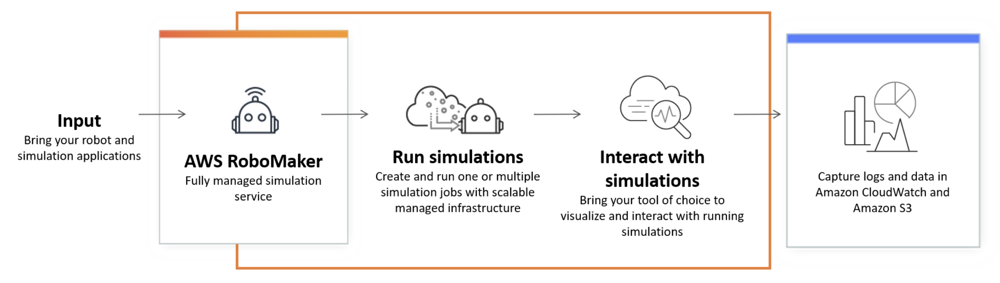

AWS Robomaker Service
A Deloitte CBO Brown Bag session.
What Problem Are We Trying to Solve?
-
What Is the Problem?
Testing...Autonomous robots require sophisticated software for capabilities such as navigation, perception, and object manipulation. This software requires comprehensive testing to ensure robots operate correctly in their environments.
-
Integrated Environment
Expensive...Testing software only with physical robots is manual process that slows down development and requires expensive hardware for each developer to test code with. Testing with computer-based simulation can also be difficult scale and manage, and can require large budgets and specialized skills.
-
A Solution
A Service...AWS RoboMaker Simulation makes it easy to test robot applications, so you can bring high-quality robots to market faster. With RoboMaker, developers can run hundreds of varied tests using virtual robots in a 3D simulation worlds.
How it works...
AWS Robomaker

Use Cases
-
Automated Regression Testing
Automate testing within a continuous integration and continuous delivery (CI/CD) pipeline. -
Train reinforcement learning models
Train reinforcement learning models with high volumes of iterative trials. -
Multi-robot testing
Connect multiple concurrent simulations to your fleet management software for testing.
Benefits & Features
Additional information can be obtained via AWS Titan Team Alliance member@couhborb.
Increase speed and code quality.
AWS RoboMaker Simulation enables you to easily run hundreds of varied test scenarios, making it possible to increase testing coverage and quickly resolve errors before problematic code reaches the robot. By running tests in simulation, you can identify edge cases and focus real-world testing only where it’s needed most. Comprehensive testing in simulation helps improve the quality of your robot and ultimately, speed up development velocity.
Batch Simulation API for AWS RoboMaker* * *
Automated testing
AWS RoboMaker Simulation enables you to integrate your robotics testing into an automated testing and release process, allowing you to rapidly deploy new features. With RoboMaker, you can automate batch simulations after each code check-in and for nightly integration testing. Automating your test and release process allows you to quickly and easily test each code change and catch bugs while they are small and simple to fix.
Integrate into CI/CD PipeliineFast, easy simulation world creation
AWS RoboMaker makes building simulation environments faster and affordable by providing simulation worlds and a variety of 3D assets. You can use these simulation assets to build simulation environments to match the level of fidelity you require. Additionally, AWS RoboMaker WorldForge enables developers to generate hundreds of user-defined, varied 3D indoor residential simulation worlds in minutes.
Simulation through World Forge
* * *
Reduce hardware dependency
AWS RoboMaker Simulation reduces the need to test software on expensive robot hardware and eliminates the need to provision, configure, or manage any infrastructure. RoboMaker Simulation provides fully managed compute infrastructure to develop and run your simulation and robot applications.

Architecture
- Effort Lead: Lars Cromley
- Architects: Gabriel Rodriguez & David Pate
- Developer:Gabriel Rodriguez
- PMOMatthew Duke & Patience Opoku
The architecture to follow is captured on Lucidchart and can be depicted here.
Thanks.
It was a pleasure sharing insights during this brown bag session. If requiring further information please contact me.